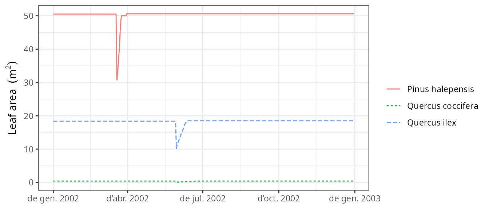

Forest dynamics
Miquel De Caceres
2024-10-27
Source:vignettes/runmodels/ForestDynamics.Rmd
ForestDynamics.RmdAbout this vignette
This document describes how to run the forest dynamics model of
medfate, described in De Cáceres et al. (2023) and
implemented in function fordyn(). This document is meant to
teach users to run the simulation model with function
fordyn(). Details of the model design and formulation can
be found at the corresponding chapters of the medfate
book.
Because the model builds on the growth and water balance models, the
reader is assumed here to be familiarized with spwb() and
growth() (otherwise read vignettes Basic
water balance and Forest
growth).
Preparing model inputs
Any forest dynamics model needs information on climate, vegetation
and soils of the forest stand to be simulated. Moreover, since models in
medfate differentiate between species, information on
species-specific model parameters is also needed. In this subsection we
explain the different steps to prepare the data needed to run function
fordyn().
Model inputs are explained in greater detail in vignettes Understanding
model inputs and Preparing
model inputs. Here we only review the different steps required
to run function fordyn().
Soil, vegetation, meteorology and species data
Soil information needs to be entered as a data frame
with soil layers in rows and physical attributes in columns. Soil
physical attributes can be initialized to default values, for a given
number of layers, using function defaultSoilParams():
examplesoil <- defaultSoilParams(4)
examplesoil## widths clay sand om nitrogen bd rfc
## 1 300 25 25 NA NA 1.5 25
## 2 700 25 25 NA NA 1.5 45
## 3 1000 25 25 NA NA 1.5 75
## 4 2000 25 25 NA NA 1.5 95As explained in the package overview, models included in
medfate were primarily designed to be ran on forest
inventory plots. Here we use the example object provided with
the package:
data(exampleforest)
exampleforest## $treeData
## Species N DBH Height Z50 Z95
## 1 Pinus halepensis 168 37.55 800 100 600
## 2 Quercus ilex 384 14.60 660 300 1000
##
## $shrubData
## Species Cover Height Z50 Z95
## 1 Quercus coccifera 3.75 80 200 1000
##
## $herbCover
## [1] 10
##
## $herbHeight
## [1] 20
##
## $seedBank
## [1] Species Percent
## <0 rows> (or 0-length row.names)
##
## attr(,"class")
## [1] "forest" "list"Importantly, a data frame with daily weather for the period to be simulated is required. Here we use the default data frame included with the package:
## dates MinTemperature MaxTemperature Precipitation MinRelativeHumidity
## 1 2001-01-01 -0.5934215 6.287950 4.869109 65.15411
## 2 2001-01-02 -2.3662458 4.569737 2.498292 57.43761
## 3 2001-01-03 -3.8541036 2.661951 0.000000 58.77432
## 4 2001-01-04 -1.8744860 3.097705 5.796973 66.84256
## 5 2001-01-05 0.3288287 7.551532 1.884401 62.97656
## 6 2001-01-06 0.5461322 7.186784 13.359801 74.25754
## MaxRelativeHumidity Radiation WindSpeed
## 1 100.00000 12.89251 2.000000
## 2 94.71780 13.03079 7.662544
## 3 94.66823 16.90722 2.000000
## 4 95.80950 11.07275 2.000000
## 5 100.00000 13.45205 7.581347
## 6 100.00000 12.84841 6.570501Finally, simulations in medfate require a data frame
with species parameter values, which we load using defaults for
Catalonia (NE Spain):
data("SpParamsMED")Simulation control
Apart from data inputs, the behaviour of simulation models can be
controlled using a set of global parameters. The default
parameterization is obtained using function
defaultControl():
control <- defaultControl("Granier")Here we will run simulations of forest dynamics using the basic water
balance model (i.e. transpirationMode = "Granier"). The
complexity of the soil water balance calculations can be changed by
using "Sperry" as input to defaultControl().
However, when running fordyn() sub-daily output will never
be stored (i.e. setting subdailyResults = TRUE is
useless).
Executing the forest dynamics model
In this vignette we will fake a ten-year weather input by repeating the example weather data frame ten times.
meteo <- rbind(examplemeteo, examplemeteo, examplemeteo, examplemeteo,
examplemeteo, examplemeteo, examplemeteo, examplemeteo,
examplemeteo, examplemeteo)
meteo$dates = seq(as.Date("2001-01-01"),
as.Date("2010-12-29"), by="day")Now we run the forest dynamics model using all inputs (note that no
intermediate input object is needed, as in spwb() or
growth()):
fd<-fordyn(exampleforest, examplesoil, SpParamsMED, meteo, control,
latitude = 41.82592, elevation = 100)## Simulating year 2001 (1/10): (a) Growth/mortality## Package 'meteoland' [ver. 2.2.2]## , (b) Regeneration nT = 2 nS = 1
## Simulating year 2002 (2/10): (a) Growth/mortality, (b) Regeneration nT = 2 nS = 1
## Simulating year 2003 (3/10): (a) Growth/mortality, (b) Regeneration nT = 2 nS = 1
## Simulating year 2004 (4/10): (a) Growth/mortality, (b) Regeneration nT = 2 nS = 1
## Simulating year 2005 (5/10): (a) Growth/mortality, (b) Regeneration nT = 2 nS = 1
## Simulating year 2006 (6/10): (a) Growth/mortality, (b) Regeneration nT = 2 nS = 1
## Simulating year 2007 (7/10): (a) Growth/mortality, (b) Regeneration nT = 2 nS = 1
## Simulating year 2008 (8/10): (a) Growth/mortality, (b) Regeneration nT = 2 nS = 1
## Simulating year 2009 (9/10): (a) Growth/mortality, (b) Regeneration nT = 2 nS = 1
## Simulating year 2010 (10/10): (a) Growth/mortality, (b) Regeneration nT = 2 nS = 1It is worth noting that, while fordyn() calls function
growth() internally for each simulated year, the
verbose option of the control parameters only affects
function fordyn() (i.e. all console output from
growth() is hidden). Recruitment and summaries are done
only once a year at the level of function fordyn().
Inspecting model outputs
Stand, species and cohort summaries and plots
Among other outputs, function fordyn() calculates
standard summary statistics that describe the structural and
compositional state of the forest at each time step. For example, we can
access stand-level statistics using:
fd$StandSummary## Step NumTreeSpecies NumTreeCohorts NumShrubSpecies NumShrubCohorts
## 1 0 2 2 1 1
## 2 1 2 2 1 1
## 3 2 2 2 1 1
## 4 3 2 2 1 1
## 5 4 2 2 1 1
## 6 5 2 2 1 1
## 7 6 2 2 1 1
## 8 7 2 2 1 1
## 9 8 2 2 1 1
## 10 9 2 2 1 1
## 11 10 2 2 1 1
## TreeDensityLive TreeBasalAreaLive DominantTreeHeight DominantTreeDiameter
## 1 552.0000 25.03330 800.0000 37.55000
## 2 551.3663 25.20814 806.2122 37.66571
## 3 550.7269 25.38313 812.4144 37.78185
## 4 550.0818 25.55825 818.5877 37.89804
## 5 549.4291 25.73292 824.7217 38.01410
## 6 548.7724 25.90729 830.8130 38.12995
## 7 548.1100 26.08105 836.8596 38.24556
## 8 547.4418 26.25427 842.8607 38.36089
## 9 546.7660 26.42680 848.8159 38.47594
## 10 546.0863 26.59896 854.7254 38.59070
## 11 545.4046 26.77088 860.5892 38.70516
## QuadraticMeanTreeDiameter HartBeckingIndex ShrubCoverLive BasalAreaDead
## 1 24.02949 53.20353 3.750000 0.00000000
## 2 24.12711 52.82391 3.092051 0.03917375
## 3 24.22476 52.45105 3.139858 0.03983747
## 4 24.32243 52.08602 3.188231 0.04050957
## 5 24.41989 51.72931 3.237273 0.04130225
## 6 24.51715 51.38076 3.286839 0.04187540
## 7 24.61409 51.04034 3.336935 0.04256669
## 8 24.71076 50.70785 3.387572 0.04326357
## 9 24.80713 50.38320 3.439335 0.04408709
## 10 24.90329 50.06598 3.490479 0.04467519
## 11 24.99925 49.75591 3.542204 0.04513908
## ShrubCoverDead BasalAreaCut ShrubCoverCut
## 1 0.000000000 0 0
## 2 0.005308898 0 0
## 3 0.004784468 0 0
## 4 0.004858342 0 0
## 5 0.004946768 0 0
## 6 0.005009006 0 0
## 7 0.005085565 0 0
## 8 0.005162947 0 0
## 9 0.005255865 0 0
## 10 0.005320788 0 0
## 11 0.005369917 0 0Species-level analogous statistics are shown using:
fd$SpeciesSummary## Step Species NumCohorts TreeDensityLive TreeBasalAreaLive
## 1 0 Pinus halepensis 1 168.0000 18.604547
## 2 0 Quercus coccifera 1 NA NA
## 3 0 Quercus ilex 1 384.0000 6.428755
## 4 1 Pinus halepensis 1 167.6992 18.685872
## 5 1 Quercus coccifera 1 NA NA
## 6 1 Quercus ilex 1 383.6671 6.522264
## 7 2 Pinus halepensis 1 167.3956 18.767232
## 8 2 Quercus coccifera 1 NA NA
## 9 2 Quercus ilex 1 383.3314 6.615899
## 10 3 Pinus halepensis 1 167.0890 18.848266
## 11 3 Quercus coccifera 1 NA NA
## 12 3 Quercus ilex 1 382.9928 6.709981
## 13 4 Pinus halepensis 1 166.7788 18.928674
## 14 4 Quercus coccifera 1 NA NA
## 15 4 Quercus ilex 1 382.6503 6.804243
## 16 5 Pinus halepensis 1 166.4665 19.008563
## 17 5 Quercus coccifera 1 NA NA
## 18 5 Quercus ilex 1 382.3060 6.898728
## 19 6 Pinus halepensis 1 166.1513 19.087791
## 20 6 Quercus coccifera 1 NA NA
## 21 6 Quercus ilex 1 381.9587 6.993262
## 22 7 Pinus halepensis 1 165.8332 19.166327
## 23 7 Quercus coccifera 1 NA NA
## 24 7 Quercus ilex 1 381.6086 7.087941
## 25 8 Pinus halepensis 1 165.5114 19.244046
## 26 8 Quercus coccifera 1 NA NA
## 27 8 Quercus ilex 1 381.2546 7.182749
## 28 9 Pinus halepensis 1 165.1876 19.321136
## 29 9 Quercus coccifera 1 NA NA
## 30 9 Quercus ilex 1 380.8987 7.277820
## 31 10 Pinus halepensis 1 164.8627 19.397698
## 32 10 Quercus coccifera 1 NA NA
## 33 10 Quercus ilex 1 380.5419 7.373179
## ShrubCoverLive BasalAreaDead ShrubCoverDead BasalAreaCut ShrubCoverCut
## 1 NA 0.000000000 NA 0 NA
## 2 3.750000 NA 0.000000000 NA 0
## 3 NA 0.000000000 NA 0 NA
## 4 NA 0.033514702 NA 0 NA
## 5 3.092051 NA 0.005308898 NA 0
## 6 NA 0.005659051 NA 0 NA
## 7 NA 0.034042919 NA 0 NA
## 8 3.139858 NA 0.004784468 NA 0
## 9 NA 0.005794555 NA 0 NA
## 10 NA 0.034577198 NA 0 NA
## 11 3.188231 NA 0.004858342 NA 0
## 12 NA 0.005932369 NA 0 NA
## 13 NA 0.035213326 NA 0 NA
## 14 3.237273 NA 0.004946768 NA 0
## 15 NA 0.006088926 NA 0 NA
## 16 NA 0.035661249 NA 0 NA
## 17 3.286839 NA 0.005009006 NA 0
## 18 NA 0.006214154 NA 0 NA
## 19 NA 0.036208945 NA 0 NA
## 20 3.336935 NA 0.005085565 NA 0
## 21 NA 0.006357748 NA 0 NA
## 22 NA 0.036760362 NA 0 NA
## 23 3.387572 NA 0.005162947 NA 0
## 24 NA 0.006503206 NA 0 NA
## 25 NA 0.037418237 NA 0 NA
## 26 3.439335 NA 0.005255865 NA 0
## 27 NA 0.006668851 NA 0 NA
## 28 NA 0.037875173 NA 0 NA
## 29 3.490479 NA 0.005320788 NA 0
## 30 NA 0.006800020 NA 0 NA
## 31 NA 0.038225978 NA 0 NA
## 32 3.542204 NA 0.005369917 NA 0
## 33 NA 0.006913100 NA 0 NAPackage medfate provides a simple plot
function for objects of class fordyn. For example, we can
show the interannual variation in stand-level basal area using:
plot(fd, type = "StandBasalArea")
Tree/shrub tables
Another useful output of fordyn() are tables in long
format with cohort structural information (i.e. DBH, height, density,
etc) for each time step:
fd$TreeTable## Step Year Cohort Species DBH Height N Z50 Z95 ObsID
## 1 0 NA T1_148 Pinus halepensis 37.55000 800.0000 168.0000 100 600 <NA>
## 2 0 NA T2_168 Quercus ilex 14.60000 660.0000 384.0000 300 1000 <NA>
## 3 1 2001 T1_148 Pinus halepensis 37.66571 806.2122 167.6992 100 600 <NA>
## 4 1 2001 T2_168 Quercus ilex 14.71218 663.4915 383.6671 300 1000 <NA>
## 5 2 2002 T1_148 Pinus halepensis 37.78185 812.4144 167.3956 100 600 <NA>
## 6 2 2002 T2_168 Quercus ilex 14.82389 666.9588 383.3314 300 1000 <NA>
## 7 3 2003 T1_148 Pinus halepensis 37.89804 818.5877 167.0890 100 600 <NA>
## 8 3 2003 T2_168 Quercus ilex 14.93552 670.4135 382.9928 300 1000 <NA>
## 9 4 2004 T1_148 Pinus halepensis 38.01410 824.7217 166.7788 100 600 <NA>
## 10 4 2004 T2_168 Quercus ilex 15.04679 673.8471 382.6503 300 1000 <NA>
## 11 5 2005 T1_148 Pinus halepensis 38.12995 830.8130 166.4665 100 600 <NA>
## 12 5 2005 T2_168 Quercus ilex 15.15772 677.2606 382.3060 300 1000 <NA>
## 13 6 2006 T1_148 Pinus halepensis 38.24556 836.8596 166.1513 100 600 <NA>
## 14 6 2006 T2_168 Quercus ilex 15.26816 680.6487 381.9587 300 1000 <NA>
## 15 7 2007 T1_148 Pinus halepensis 38.36089 842.8607 165.8332 100 600 <NA>
## 16 7 2007 T2_168 Quercus ilex 15.37822 684.0151 381.6086 300 1000 <NA>
## 17 8 2008 T1_148 Pinus halepensis 38.47594 848.8159 165.5114 100 600 <NA>
## 18 8 2008 T2_168 Quercus ilex 15.48791 687.3601 381.2546 300 1000 <NA>
## 19 9 2009 T1_148 Pinus halepensis 38.59070 854.7254 165.1876 100 600 <NA>
## 20 9 2009 T2_168 Quercus ilex 15.59735 690.6873 380.8987 300 1000 <NA>
## 21 10 2010 T1_148 Pinus halepensis 38.70516 860.5892 164.8627 100 600 <NA>
## 22 10 2010 T2_168 Quercus ilex 15.70656 693.9971 380.5419 300 1000 <NA>The same can be shown for dead trees:
fd$DeadTreeTable## Step Year Cohort Species DBH Height N N_starvation
## 1 1 2001 T1_148 Pinus halepensis 37.66571 806.2122 0.3007828 0
## 2 1 2001 T2_168 Quercus ilex 14.71218 663.4915 0.3328893 0
## 3 2 2002 T1_148 Pinus halepensis 37.78185 812.4144 0.3036481 0
## 4 2 2002 T2_168 Quercus ilex 14.82389 666.9588 0.3357419 0
## 5 3 2003 T1_148 Pinus halepensis 37.89804 818.5877 0.3065253 0
## 6 3 2003 T2_168 Quercus ilex 14.93552 670.4135 0.3386082 0
## 7 4 2004 T1_148 Pinus halepensis 38.01410 824.7217 0.3102613 0
## 8 4 2004 T2_168 Quercus ilex 15.04679 673.8471 0.3424230 0
## 9 5 2005 T1_148 Pinus halepensis 38.12995 830.8130 0.3123015 0
## 10 5 2005 T2_168 Quercus ilex 15.15772 677.2606 0.3443690 0
## 11 6 2006 T1_148 Pinus halepensis 38.24556 836.8596 0.3151838 0
## 12 6 2006 T2_168 Quercus ilex 15.26816 680.6487 0.3472482 0
## 13 7 2007 T1_148 Pinus halepensis 38.36089 842.8607 0.3180625 0
## 14 7 2007 T2_168 Quercus ilex 15.37822 684.0151 0.3501270 0
## 15 8 2008 T1_148 Pinus halepensis 38.47594 848.8159 0.3218214 0
## 16 8 2008 T2_168 Quercus ilex 15.48791 687.3601 0.3539773 0
## 17 9 2009 T1_148 Pinus halepensis 38.59070 854.7254 0.3238168 0
## 18 9 2009 T2_168 Quercus ilex 15.59735 690.6873 0.3558922 0
## 19 10 2010 T1_148 Pinus halepensis 38.70516 860.5892 0.3248859 0
## 20 10 2010 T2_168 Quercus ilex 15.70656 693.9971 0.3567965 0
## N_dessication N_burnt Z50 Z95 ObsID
## 1 0 0 100 600 <NA>
## 2 0 0 300 1000 <NA>
## 3 0 0 100 600 <NA>
## 4 0 0 300 1000 <NA>
## 5 0 0 100 600 <NA>
## 6 0 0 300 1000 <NA>
## 7 0 0 100 600 <NA>
## 8 0 0 300 1000 <NA>
## 9 0 0 100 600 <NA>
## 10 0 0 300 1000 <NA>
## 11 0 0 100 600 <NA>
## 12 0 0 300 1000 <NA>
## 13 0 0 100 600 <NA>
## 14 0 0 300 1000 <NA>
## 15 0 0 100 600 <NA>
## 16 0 0 300 1000 <NA>
## 17 0 0 100 600 <NA>
## 18 0 0 300 1000 <NA>
## 19 0 0 100 600 <NA>
## 20 0 0 300 1000 <NA>Accessing the output from function growth()
Since function fordyn() makes internal calls to function
growth(), it stores the result in a vector called
GrowthResults, which we can use to inspect intra-annual
patterns of desired variables. For example, the following shows the leaf
area for individuals of the three cohorts during the second year:
plot(fd$GrowthResults[[2]], "LeafArea", bySpecies = T)
Instead of examining year by year, it is possible to plot the whole
series of results by passing a fordyn object to the
plot() function:
plot(fd, "LeafArea")
Finally, we can create interactive plots for particular steps using
function shinyplot(), e.g.:
shinyplot(fd$GrowthResults[[1]])Forest dynamics including management
The package allows including forest management in simulations of
forest dynamics. This is done in a very flexible manner, in the sense
that fordyn() allows the user to supply an arbitrary
function implementing a desired management strategy for the stand whose
dynamics are to be simulated. The package includes, however, an in-built
default function called defaultManagementFunction() along
with a flexible parameterization, a list with defaults provided by
function defaultManagementArguments().
Here we provide an example of simulations including forest management:
# Default arguments
args <- defaultManagementArguments()
# Here one can modify defaults before calling fordyn()
#
# Simulation
fd<-fordyn(exampleforest, examplesoil, SpParamsMED, meteo, control,
latitude = 41.82592, elevation = 100,
management_function = defaultManagementFunction,
management_args = args)## Simulating year 2001 (1/10): (a) Growth/mortality & management [thinning], (b) Regeneration nT = 2 nS = 2
## Simulating year 2002 (2/10): (a) Growth/mortality & management [none], (b) Regeneration nT = 2 nS = 2
## Simulating year 2003 (3/10): (a) Growth/mortality & management [none], (b) Regeneration nT = 2 nS = 2
## Simulating year 2004 (4/10): (a) Growth/mortality & management [none], (b) Regeneration nT = 2 nS = 2
## Simulating year 2005 (5/10): (a) Growth/mortality & management [none], (b) Regeneration nT = 2 nS = 2
## Simulating year 2006 (6/10): (a) Growth/mortality & management [none], (b) Regeneration nT = 2 nS = 2
## Simulating year 2007 (7/10): (a) Growth/mortality & management [none], (b) Regeneration nT = 2 nS = 2
## Simulating year 2008 (8/10): (a) Growth/mortality & management [none], (b) Regeneration nT = 2 nS = 2
## Simulating year 2009 (9/10): (a) Growth/mortality & management [none], (b) Regeneration nT = 2 nS = 2
## Simulating year 2010 (10/10): (a) Growth/mortality & management [none], (b) Regeneration nT = 2 nS = 2When management is included in simulations, two additional tables are produced, corresponding to the trees and shrubs that were cut, e.g.:
fd$CutTreeTable## Step Year Cohort Species DBH Height N Z50 Z95 ObsID
## 1 1 2001 T1_148 Pinus halepensis 37.66571 806.2122 9.335235 100 600 <NA>
## 2 1 2001 T2_168 Quercus ilex 14.71218 663.4915 383.667111 300 1000 <NA>Management parameters were those of an irregular model with thinning interventions from ‘below’, indicating that smaller trees were to be cut earlier:
args$type## [1] "irregular"
args$thinning## [1] "below"Note that in this example, there is resprouting of Quercus ilex after the thinning intervention, evidenced by the new cohort (T3_168) appearing in year 2001:
fd$TreeTable## Step Year Cohort Species DBH Height N Z50 Z95
## 1 0 NA T1_148 Pinus halepensis 37.550000 800.00000 168.0000 100.000 600
## 2 0 NA T2_168 Quercus ilex 14.600000 660.00000 384.0000 300.000 1000
## 3 1 2001 T1_148 Pinus halepensis 37.665714 806.21221 158.3640 100.000 600
## 4 1 2001 T3_168 Quercus ilex 1.000000 47.23629 3000.0000 300.000 1000
## 5 2 2002 T1_148 Pinus halepensis 37.783136 812.42942 158.1925 100.000 600
## 6 2 2002 T3_168 Quercus ilex 1.138465 55.72699 2613.6589 300.000 1000
## 7 3 2003 T1_148 Pinus halepensis 37.903263 818.75045 158.0197 100.000 600
## 8 3 2003 T3_168 Quercus ilex 1.254329 62.78682 2357.7754 300.000 1000
## 9 4 2004 T1_148 Pinus halepensis 38.023436 825.04012 157.8450 100.000 600
## 10 4 2004 T3_168 Quercus ilex 1.370150 69.84156 2146.4770 300.000 1000
## 11 5 2005 T1_148 Pinus halepensis 38.143510 831.29111 157.6694 100.000 600
## 12 5 2005 T2_168 Quercus ilex 1.413444 74.33957 2388.5454 282.355 1000
## 13 6 2006 T1_148 Pinus halepensis 38.261912 837.42213 157.4926 100.000 600
## 14 6 2006 T2_168 Quercus ilex 1.530237 81.45569 1908.5733 282.355 1000
## 15 7 2007 T1_148 Pinus halepensis 38.380692 843.54012 157.3145 100.000 600
## 16 7 2007 T2_168 Quercus ilex 1.647162 88.57922 1764.8776 282.355 1000
## 17 8 2008 T1_148 Pinus halepensis 38.499604 849.63239 157.1344 100.000 600
## 18 8 2008 T2_168 Quercus ilex 1.765275 95.78108 1639.6114 282.355 1000
## 19 9 2009 T1_148 Pinus halepensis 38.618506 855.69180 156.9535 100.000 600
## 20 9 2009 T2_168 Quercus ilex 1.884053 103.02922 1529.9469 282.355 1000
## 21 10 2010 T1_148 Pinus halepensis 38.737310 861.71400 156.7722 100.000 600
## 22 10 2010 T2_168 Quercus ilex 2.003338 110.31380 1433.2939 282.355 1000
## ObsID
## 1 <NA>
## 2 <NA>
## 3 <NA>
## 4 <NA>
## 5 <NA>
## 6 <NA>
## 7 <NA>
## 8 <NA>
## 9 <NA>
## 10 <NA>
## 11 <NA>
## 12 <NA>
## 13 <NA>
## 14 <NA>
## 15 <NA>
## 16 <NA>
## 17 <NA>
## 18 <NA>
## 19 <NA>
## 20 <NA>
## 21 <NA>
## 22 <NA>References
- De Cáceres M, Molowny-Horas R, Cabon A, Martínez-Vilalta J, Mencuccini M, García-Valdés R, Nadal-Sala D, Sabaté S, Martin-StPaul N, Morin X, D’Adamo F, Batllori E, Améztegui A (2023) MEDFATE 2.9.3: A trait-enabled model to simulate Mediterranean forest function and dynamics at regional scales. Geoscientific Model Development 16: 3165-3201 (https://doi.org/10.5194/gmd-16-3165-2023).